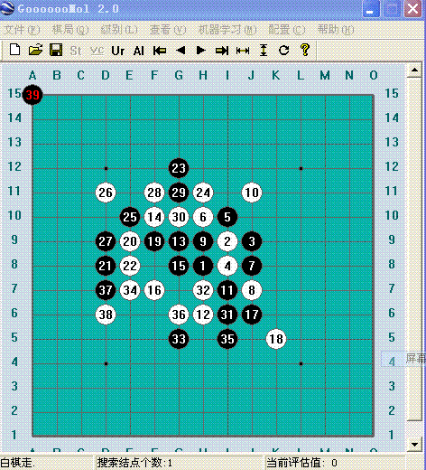

我前一阵子写的一个五子棋软件
#1 我前一阵子写的一个五子棋软件 作者：五子棋程序 发表时间：2008-10-18 10:47:54
最近因为找工作，所以耽误了。否则软件现在应该很完善了。
该版本被称为GM2，AI引擎和界面都是自创的。含禁手规则。
目前因为没有使用开局库，所以开局时稍慢，但相对与黑石，这个速度还可以。使用了一些先进的搜索技术和自己一些独创的技巧。欢迎大家提意见（软件现在还不完善，本来目的是制作一款集打谱、机器分析、分布式学习与一体的超黑石的软件，呵呵）。
 Gomo.rar
Gomo.rar
［ 有志青年 于 2008-10-19 17:44:43 时奖励此帖[金币加 20 威望加1］
#2 Re:我前一阵子写的一个五子棋软件 作者：nara 发表时间：2008-10-19 18:40:39

刚才下载随便点了几下,我下38的时候,电脑居然出现图上这种bug,看来楼主的软件还有很多需要完善的.加油!
#3 Re:我前一阵子写的一个五子棋软件 作者：兔子哥哥 发表时间：2008-10-19 20:18:55
不行，下棋太弱，还不如黑石的 十分之一！#4 Re:我前一阵子写的一个五子棋软件 作者：江南新绿 发表时间：2008-10-19 20:29:26
to 2 楼的,这个也许是表示投了.以前小4做软件的时候,有一些测试vct和禁手是否成立的题目.如果你找的到,自己可以去测试下.
#5 Re:我前一阵子写的一个五子棋软件 作者：逆刃 发表时间：2008-10-19 20:35:33
感觉进攻还是可以，但是防守很弱，主要是没有考虑棋局的平衡，觉得应该加上像黑石一样能算出平衡度的功能，避免一味的进攻。还有就是VCT功能有待加强，感觉机器对对手的VCT不是很重视。#6 Re:我前一阵子写的一个五子棋软件 作者：江南新绿 发表时间：2008-10-19 20:45:18
=======上图对应的爱五子棋谱代码如下，以便你拆解：========
h8i9i8h7j6j8k6i6j7l5k7j5a15
======================================================
暂时就已经找到了一个.如图13黑棋还不应该投降
#7 Re:我前一阵子写的一个五子棋软件 作者：其怪 发表时间：2008-10-19 20:58:39
这是什么东东
#8 Re:我前一阵子写的一个五子棋软件 作者：lyx655 发表时间：2008-10-19 21:21:24
攻击力不错，算法应该可以。小BUG有几个只要慢慢改良，有前途！
#9 Re:我前一阵子写的一个五子棋软件 作者：冷面孤煞 发表时间：2008-10-20 18:10:04
总体的来说，希望作者+油，祝你早日做出强大的软件。